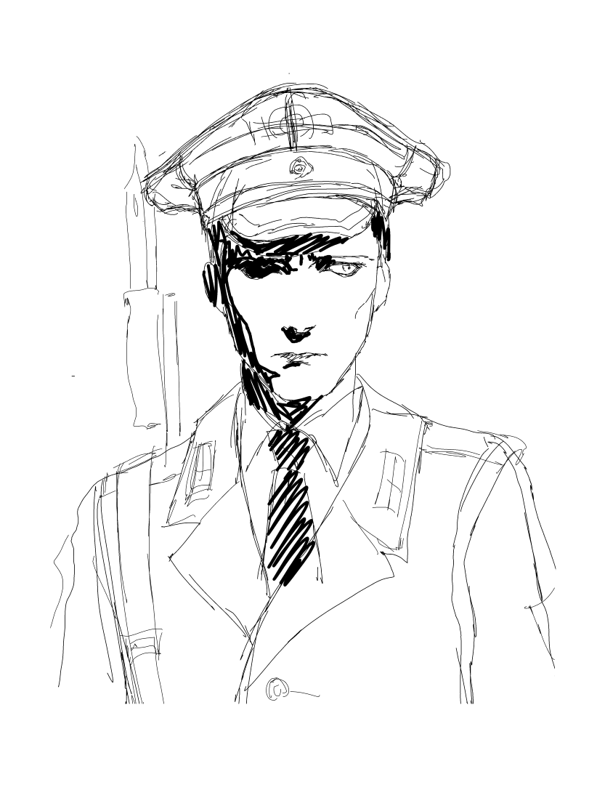
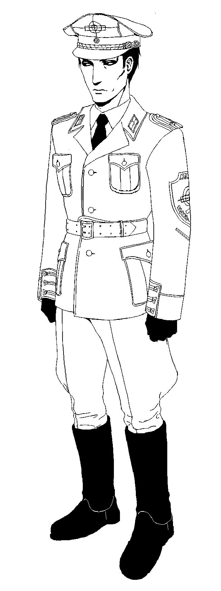

| Go to bottom | back |
|
Recruited by Håkan out of the remnants of several now-dissolved PMCs they were both a part of when they were younger. In his youth, he served in his sector's military for several years, and after his discharge due to political downsizing, he began employment in various PMCs where he ended up becoming acquainted with Håkan. Because of the lucrativeness of the PMC market as opposed to public militaries, he had no qualms about joining, being primarily driven by profit for his endeavors. In Segervittring, he basically just performs EA tasks for Håkan. Despite his position being integral to the functions of the PMC running smoothly, Håkan likes to mess with him and impede his efficiency when he gets bored--especially because of Jan's workhorse tendencies. He's gotten so used to it that it becomes an everyday occurrence for him. He's an individual of great austerity and typically abstains from any kind of indulgent behavior, putting him at odds with Håkan's epicurean personality. He has a bit of an inferiority complex, which results in him taking all manners of work seriously--as it is a source of pride for him. His lack of confidence tends to cause him to assume the worst, and he generally mistrusts people when they are kind to him. A soppy guy who has been dunked in milk one million times. He's a suprisingly competent artist and handles design and illustrative work for the company sometimes. His secret is that he loves karaoke and pop music. He appreciates good craftmanship, so he shares Håkan's liking for folk costumes. Jan and Håkan will never pledge their loyalties to anyone, but for each other they make an exception. ( ◕▿◕ ) Extra fun fact: He was made when I was listening to a lot of digital hardcore. He is also my newest ""main"" OC. |
Full-size can be viewed by right-clicking and opening the image☆. Dates and notes can be viewed upon hovering.
 | Go to top | back |